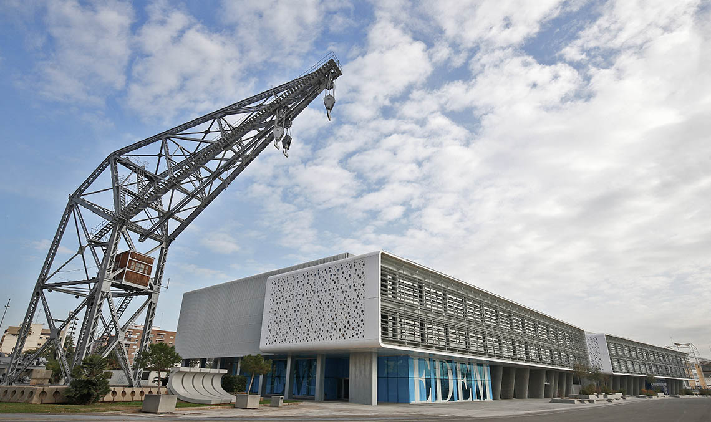
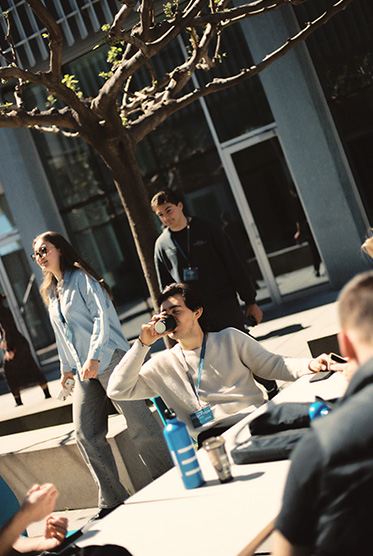

Manual de supervivencia en la Marina
La opción difícil
El campus donde ocurre todo
Sobrevivir al primer año
3 startups que mueven el puerto
EDEM en un vistazo
Cómo piensa un inversor
Sofía Raimundo
Una publicación de EDEM Escuela de Empresarios, dentro del ecosistema Marina de Empresas junto a Lanzadera y Angels.
Somos la opción incómoda: la de complicarse la vida y demostrarlo con hechos. No buscamos aplausos, buscamos impacto. Este primer número no es un folleto de bienvenida; es un mapa para quien acaba de atracar en la Marina y todavía no sabe que aquí ocurre todo antes de que ocurra fuera.
Elegir EDEM es elegir esfuerzo, crecimiento y ganas de transformar empresas y sociedad. No es para todos. Y aunque algunos lo pongan en duda, para ti es irresistible. En estas páginas verás cómo se cruza un pasillo que conecta un aula con una startup y con la mesa de un inversor.
Lo llamamos remar a contracorriente. No porque nos guste el esfuerzo por el esfuerzo, sino porque sabemos que la corriente cómoda no lleva a ningún puerto que merezca la pena. Bienvenido a bordo.
— El equipo de EDEM

En un mismo edificio de la Marina de València conviven las aulas de EDEM, las startups de Lanzadera y la mesa de inversión de Angels. La distancia entre una idea y un inversor se mide en pasos.
Nadie te lo dice, pero el primer curso no va de aprobar: va de aprender a moverte.
El campus es pequeño y a la vez infinito, porque cada pasillo conecta con una startup o con una reunión de Angels. Lo primero que descubres es que la persona sentada a tu lado probablemente monte tu próxima empresa.
Aprende los nombres. Pregunta sin miedo. El talento raro se entrena en compañía, y la humildad de preguntar acelera más que cualquier apunte. Nadie llegó lejos fingiendo saberlo todo el primer día.
Ve a los eventos aunque no entiendas la mitad. La segunda mitad la entenderás la próxima vez, y para entonces ya conocerás a media sala. La red se construye antes de necesitarla.
Y cuando dudes, rema. BOGA no es solo un boletín: es una actitud. A contracorriente, siempre, porque la corriente fácil no lleva a ningún puerto interesante.
Preséntate primero
El networking empieza por ti.
Di sí a los retos
Se aprende haciendo.
Cuida el ecosistema
Da antes de pedir.
Portmar
LogísticaAutomatiza la operativa de atraque y recorta un 30% los tiempos muertos en el puerto. Ya opera en tres terminales del Mediterráneo y prepara su salto a Génova.
Salinnova
CleantechDesalación modular de bajo consumo para la industria conservera. Convierte agua de mar en recurso industrial con una huella energética mínima.
Marea AI
IAPredicción de oleaje en tiempo real para la operativa portuaria. Sus modelos anticipan ventanas seguras de carga con horas de adelanto.
Lanzadera · centro de alto rendimiento para startups
alumnos insertados en empresas
empresas que confían en EDEM para captar talento
en becas para estudiantes este curso
año de fundación en Valencia
Empresarios formando a empresarios, donde se aprende haciendo.
En los tres primeros minutos un inversor decide si te escucha. No es magia: es patrón.
El equipo antes que la idea. Las ideas cambian tres veces antes de la serie A; la gente que las ejecuta, no. Angels invierte en personas capaces de sostener el plan cuando el plan se rompe.
No financiamos ideas. Financiamos a quien es capaz de convertirlas en empresa.
El momento lo es casi todo. Un buen negocio a destiempo es un mal negocio. Demuestra por qué esta ventana se abre hoy y por qué se cerrará si no la cruzas ahora.
Techo de mercado, no de ego. El inversor quiere ver el tamaño del océano, no la altura de tu ambición. Aterriza el TAM con datos y honestidad.
Gracias a EDEM entendí cómo se construye una marca desde cero — y aprendí a remar cuando todo va en contra.
Sofía Raimundo
Partnership & Hospitality en Roig Arena · Máster de Marketing y Venta Digital
El mail que rema a contracorriente
Contenidos sobre empresa más allá de los libros, directo a tu bandeja. Noticias, consejos y los eventos que ocurren en la Marina de Empresas.
© 2026 EDEM · Escuela de Empresarios · Parte de Marina de Empresas ∞ Lanzadera · Angels